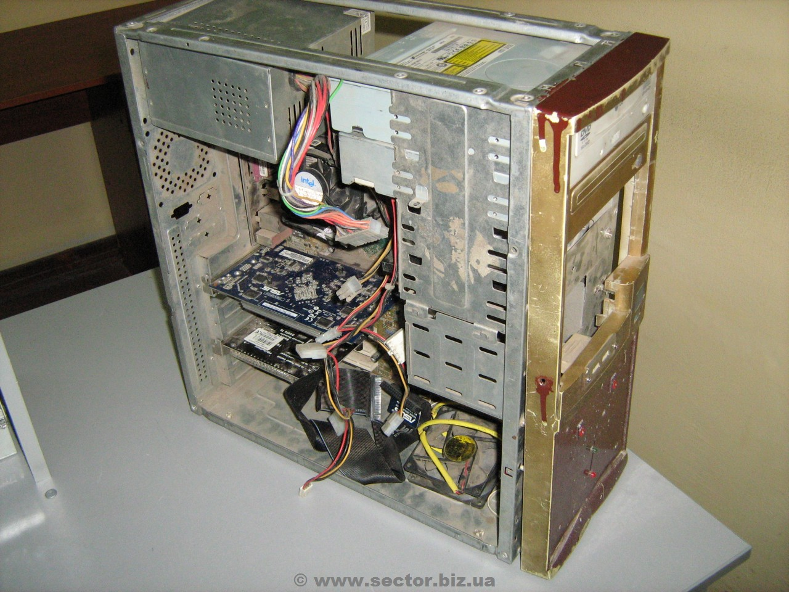

Комп’ютери б/у купуйте тільки у перевірених людей
Придбавати комп'ютери, які вже побували у використанні, доволі ризиковано. Адже мало хто продає використану річ винятково через непотрібність. Переважно, якщо людина хоче продати б/у комп'ютер, вона пропонує його знайомим. Якщо ж це роблять по оголошенню, то маловірогідно, що ви придбаєте якісний товар.
Якщо хочете купити б/у техніку в магазині - робіть це лише у надійній й авторитетній фірмі.
Уважно огляньте товар та впевніться, що там немає пошкоджень чи інших дефектів. І найкраще, якщо ви купуватимете таку техніку зі знайомим, який добре орієнтується у ній.
